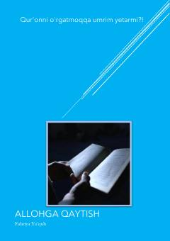

AQO'lim va oxiratni eslab, Alloh yo'liga qaytishga intilgan qizning hayotiy ibratli hikoyasi.
Mazkur kitobda inson hayoti, o'limning muqarrarligi, oxiratni unutib qo'ymaslik hamda Alloh yo'liga qaytish va ibodatga bo'lgan munosabat haqida hikoya qilinadi. Asar qahramoni Firuzaning hayotiy misolida yoshlarning tarbiyasi, ota-onaga hurmat va diyonat masalalari yoritilgan.